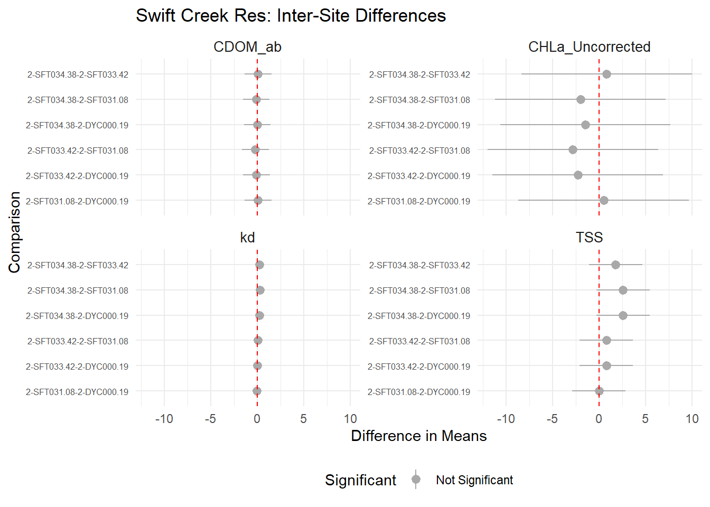
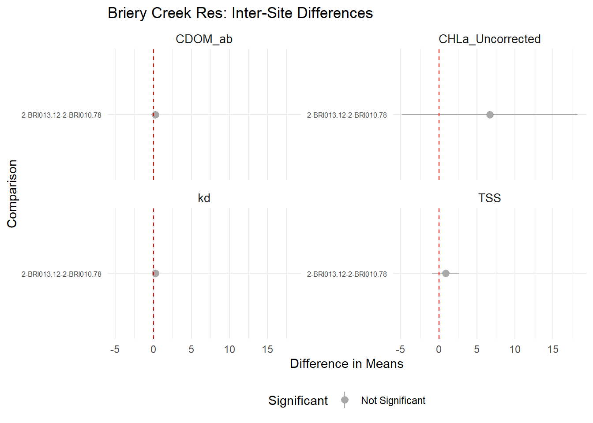
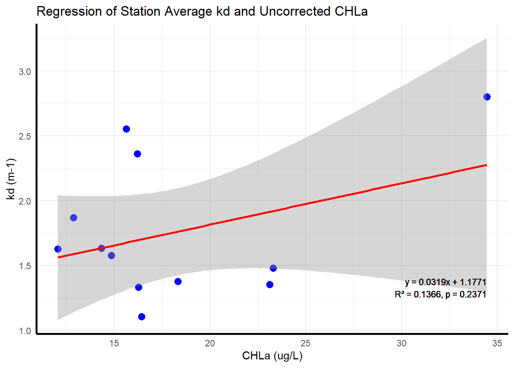
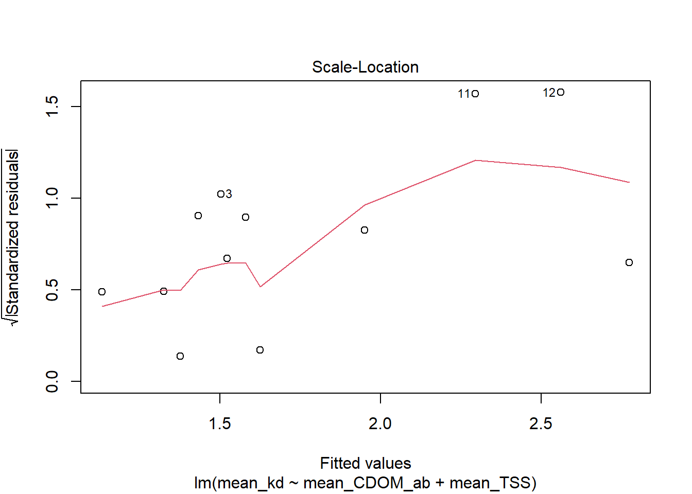

Thesis Lake Comparisons/Anovas
KD Comparison By Lakes

Predictor Comparison By Lake



Station Average Original Regression Analysis
# A tibble: 12 × 5
Site mean_kd mean_CDOM_ab mean_CHLa_Corrected mean_TSS
<chr> <dbl> <dbl> <dbl> <dbl>
1 2-BRI010.78 1.10 1.75 13.7 2.77
2 2-BRI013.12 1.36 1.99 19.3 3.64
3 2-DYC000.19 1.63 2.06 12.2 4.6
4 2-MBN000.96 1.38 2.16 15.5 3.75
5 2-SDY004.27 1.33 2.21 13.9 4.03
6 2-SDY005.85 1.48 2.18 20.9 4.93
7 2-SFT031.08 1.58 2.17 12.7 4.6
8 2-SFT033.42 1.63 1.98 10.5 5.4
9 2-SFT034.38 1.87 2.08 11.1 7.2
10 5ANTW127.14 2.80 3.18 30.0 10.8
11 Chickahominy 2.56 6.45 12.6 4.52
12 Harrison 2.36 7.88 13.6 4.54


Station Average Regressions Subtracting Residuals


The table below shows the average kd value for each station, along with the percentage of kd that is associated with each variable (CDOM, TSS, CHLa). It should be noted that the effects of CHLa were insignificant as the P-value > 0.05.
# A tibble: 12 × 5
# Groups: Site [12]
Site mean_kd prop_kd_CDOM prop_kd_TSS prop_kd_CHLa
<chr> <dbl> <dbl> <dbl> <dbl>
1 2-BRI010.78 1.10 30.0 42.8 47.5
2 2-BRI013.12 1.36 27.8 45.9 54.6
3 2-DYC000.19 1.63 23.9 48.1 28.8
4 2-MBN000.96 1.38 29.7 46.5 43.3
5 2-SDY004.27 1.33 31.5 51.7 40.2
6 2-SDY005.85 1.48 27.9 56.9 54.3
7 2-SFT031.08 1.58 26.0 49.8 30.9
8 2-SFT033.42 1.63 23.0 56.7 24.7
9 2-SFT034.38 1.87 21.1 65.8 22.8
10 5ANTW127.14 2.80 21.5 66.1 41.2
11 Chickahominy 2.56 47.9 30.3 19.0
12 Harrison 2.36 63.2 32.8 22.0AIC and Multiple Regression
Predictors AIC Delta_AIC
1 CDOM_ab + TSS + CHLa_Corrected 65.25681 0.00000
2 CDOM_ab + CHLa_Corrected 84.73114 19.47433
3 CDOM_ab + TSS 93.52291 28.26610
4 TSS + CHLa_Corrected 106.98502 41.72821
5 TSS 121.85070 56.59389
6 CHLa_Corrected 122.24838 56.99156
7 CDOM_ab 128.08863 62.83182
8 149.49918 84.24237
Call:
lm(formula = kd ~ CDOM_ab + TSS + CHLa_Corrected, data = thes)
Residuals:
Min 1Q Median 3Q Max
-0.86629 -0.25937 -0.03616 0.23781 0.97465
Coefficients:
Estimate Std. Error t value Pr(>|t|)
(Intercept) 0.389642 0.172533 2.258 0.028145 *
CDOM_ab 0.235405 0.030009 7.844 2.24e-10 ***
TSS 0.101222 0.024811 4.080 0.000155 ***
CHLa_Corrected 0.014258 0.009154 1.558 0.125418
---
Signif. codes: 0 '***' 0.001 '**' 0.01 '*' 0.05 '.' 0.1 ' ' 1
Residual standard error: 0.4113 on 52 degrees of freedom
(16 observations deleted due to missingness)
Multiple R-squared: 0.6322, Adjusted R-squared: 0.611
F-statistic: 29.8 on 3 and 52 DF, p-value: 2.376e-11[1] "kd = 0.3896 + 0.2354 * CDOM_ab + 0.1012 * TSS + 0.0143 * CHLa_Corrected"

Residuals vs Fitted Plot
The “Residuals vs Fitted” plot evaluates the assumptions of the linear regression model. Ideally, residuals (errors) should be randomly distributed around zero with no clear pattern, indicating a good fit of the model. In this plot:
- The residuals appear somewhat evenly distributed around the horizontal line at 0, but there is slight curvature in the red line (a loess smoother), suggesting potential non-linearity in the relationship or model misspecification.
- A few labeled points (e.g., 16 and 21) indicate potential influential or high-leverage observations.
- The variability of residuals appears relatively consistent across the range of fitted values, meaning there is no strong evidence of heteroscedasticity (changing variance).
This plot suggests the model performs reasonably but may benefit from further diagnostics or additional predictors to capture non-linear effects.
Q-Q Plot
The Q-Q (quantile-quantile) plot evaluates whether the residuals from the regression model follow a normal distribution. In this plot:
- The majority of points fall close to the diagonal line, indicating that the residuals generally follow a normal distribution.
- However, deviations are observed at both ends of the plot. Points 21 and 16 at the upper end and point 5 at the lower end deviate significantly, suggesting potential outliers or non-normality in the tails.
Overall, while the residuals are approximately normal, the deviations at the extremes indicate that the model’s assumptions may not hold perfectly, warranting further investigation of these specific data points.
Scale Location Plot
The “Scale-Location” plot evaluates the assumption of homoscedasticity in a linear regression model, meaning the residuals should have constant variance across the range of fitted values. In this plot:
- The residuals, represented as the square root of their absolute standardized values, appear somewhat randomly distributed, but the red loess smoother shows a slight upward trend at higher fitted values. This suggests potential heteroscedasticity or a mild violation of the constant variance assumption.
- A few points, such as 16 and 21, are labeled, indicating they may be influential or outliers worth investigating further.
- The variability of residuals is fairly consistent across most fitted values, though the upward trend in the red line warrants further inspection. Overall, the model performs reasonably well but may benefit from adjustments, such as transforming variables or adding predictors, to address the slight non-constant variance.
Residuals vs Leverage Plot
The Residuals vs. Leverage plot evaluates the influence of individual data points on the regression model. In this plot:
- Most points are clustered within the lower-leverage region, indicating that the majority of observations have minimal influence on the model.
- Points 16, 18, and 21 are positioned further from the cluster, suggesting higher leverage and potential influence on the model fit.
- The Cook’s distance lines show that none of these points exceed the threshold (Cook’s distance = 1), though they may still require closer inspection due to their relatively high leverage.
Overall, while most points do not appear problematic, points with higher leverage (e.g., 16, 18, and 21) should be investigated to assess their impact on the model.